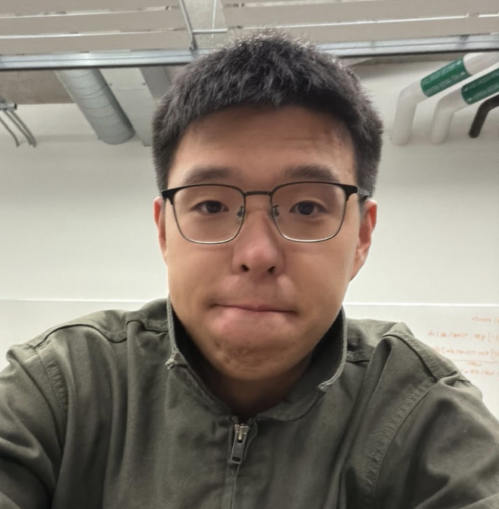

On branch dev

Hi! I am a second-year Ph.D. student in the Paul G. Allen School of Computer Science & Engineering at the University of Washington. I was advised by Prof. Simon Shaolei Du and Prof. Maryam Fazel. Prior to UW, I received my Bachelor of Science degree from the School of Mathematical Sciences, Peking University.
All theory, my friend, is grey,
— Goethe, Faust
But the golden tree of life springs ever green.
I believe that, even for professional researchers, they don't have to do research all the time. If we don't have a specific motivation, and are satisfied and convinced with our current understanding, then we are good and don't have to do research. I only do research when (1) I have some ideas or intuitions, but it is hard to put them together, thus I need to approach them in a more systematic way: doing research and writing a paper (or blogs will do just fine); (2) I believe that we should do something, but others are not convinced, hence we need evidence and a story.
My research interests encompass Diffusion Models and Reinforcement Learning. Recently, I have been using Flow Matching Models to paint on geometric shapes like the sphere and torus (ball and donut). I am also exploring the possibilities of using Masked Diffusion to play Real Time Strategy (RTS) games, serving like a working memory context kernel with self-attention driven parallel decoding and process management abilities.
For my complete publication list, please visit my Google Scholar profile.
In my spare time, I enjoy playing football (CB) and tennis (RH, 2HBH). I am also trying out baseball, bouldering and skiing recently, and I am generally interested in all kinds of indoor and outdoor sports.